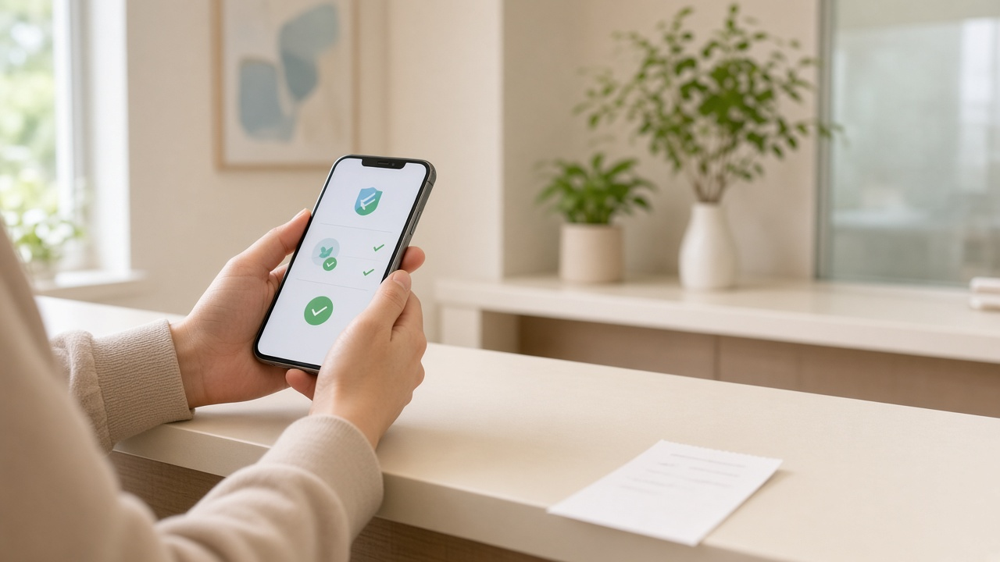

동네 의원 실손보험 청구, 실손24 연계 병원이면 영수증 사진 없이 끝나요 연계율 절반일 때 먼저 볼 것

감기로 동네 의원에 다녀오거나 약국에서 약을 지으면 금액이 작아서 실손보험 청구를 그냥 넘기는 분들이 많아요. 영수증을 챙기고, 세부내역서를 따로 떼고, 사진을 찍어 보험사 앱에 올리는 과정이 번거롭기 때문이죠. 이제는 병원이 서류를 보험사로 바로 보내 주는 실손24가 동네 의원과 약국까지 넓어졌어요. 다만 아직 모든 곳이 연결된 건 아니라서, 내가 다니는 곳이 되는지부터 확인하는 게 순서예요. 오늘은 금융위원회 공식 자료를 바탕으로 실손24로 청구하는 방법과 놓치기 쉬운 부분을 정리해 볼게요.
실손24가 바꾼 것은 서류를 떼러 가는 일이에요
실손24는 소비자가 앱이나 홈페이지에서 요청하면 병원과 약국이 진료비 영수증, 진료비 세부산정내역서, 처방전을 보험사로 전자 방식으로 보내 주는 서비스예요. 병원 창구에 다시 가서 종이 서류를 받을 필요도, 서류를 찍어 올릴 필요도 없어요.
이 제도는 2024년 10월 25일 병원급 의료기관과 보건소부터 시작했고, 2025년 10월 25일부터 의원과 약국까지 넓어졌어요. 법으로 보면 병원, 보건소, 의원, 약국 모두 보험계약자가 요청하면 청구 서류를 보험사에 전자 방식으로 보내야 해요.
실손24 자체는 서류를 보험사로 넘겨 주는 중간 다리 역할이에요. 보험금을 줄지 말지 심사하는 곳은 여전히 내가 가입한 보험사예요.
내가 간 병원이 연결됐는지 먼저 확인하기
가장 중요한 점은 아직 연결률이 절반 정도라는 거예요. 금융위원회 자료를 보면 9월 28일 기준 전국 의료기관 10만 5643곳 가운데 5만 340곳이 실손24에 연결돼 있어요. 비율로는 약 47.7퍼센트예요.
연결된 곳을 나눠 보면 병원 1107곳, 보건소 3578곳, 의원 2만 4995곳, 약국 2만 608곳이에요. 병원과 보건소는 약 60퍼센트, 의원과 약국은 약 46.7퍼센트가 연결됐어요. 금융위원회는 연말까지 병의원 연결률을 80에서 90퍼센트까지 올리는 것을 목표로 하고 있어요.
그래서 진료를 받기 전이나 청구하기 전에 실손24 앱의 참여병원 검색에서 내가 갈 곳이 있는지 보는 게 좋아요. 네이버 지도나 카카오 지도에서도 실손24 연계 병원을 찾을 수 있도록 지원하고 있어요. 다니는 병원이 아직 연결되지 않았다면 실손24의 참여 요청하기 기능으로 연결을 요청할 수 있어요.
실손24로 청구하는 순서
실손24 앱을 내려받거나 홈페이지 silson24.or.kr 에 들어가면 돼요. 휴대전화나 아이핀으로 본인 확인을 하면 회원가입 없이도 청구할 수 있다고 안내돼 있어요.
순서는 간단해요. 본인 확인을 한 뒤 내 보험계약을 고르고, 다녀온 병원의 진료내역을 고르고, 청구서를 작성해서 전송을 요청하면 끝이에요. 같은 질병이나 사고로 실손24에서 처음 청구한다면 신규청구를, 실손24로 이미 청구했던 건의 추가 치료라면 추가청구를 고르면 돼요. 보험사 앱으로 먼저 청구했던 건이라도 실손24에서는 처음이면 신규청구로 하라고 안내하고 있어요.
10월 7일부터는 네이버 지도, 네이버페이, 토스 앱 안에서도 실손24 청구를 끝까지 마칠 수 있게 바뀌었어요. 마이데이터 이용에 동의하면 다녀온 병원과 약국, 진료일, 보험사, 계좌번호를 따로 입력하지 않아도 된다고 해요.
전송이 끝난 뒤 접수와 심사, 지급 상황은 실손24가 아니라 가입한 보험사 홈페이지나 앱에서 확인해요.
연결 안 된 곳과 부모님 대신 청구할 때
아직 연결되지 않은 병원이나 약국의 진료비는 예전처럼 서류를 받아 보험사 앱에 사진으로 올리는 방식으로 청구하면 돼요. 한 번 아플 때 병원은 연결돼 있고 약국은 아닌 경우도 있으니 둘을 따로 확인하는 게 좋아요.
스마트폰 사용이 어려운 부모님은 제3자 청구 기능을, 아이 병원비는 나의 자녀청구 기능을 쓸 수 있어요. 가족이 대신 손쉽게 청구할 수 있도록 마련된 기능이에요.
하나 더 알아 둘 점이 있어요. 실손24는 이용 시간 제한이 없지만, 다녀온 병원이나 약국이 문을 닫은 뒤에는 진료내역이 조회되지 않을 수 있어요. 진료 당일 늦은 밤보다 병원 운영 시간 안에 청구하는 편이 수월해요. 막히는 부분은 실손24 고객센터에 물어볼 수 있고, 운영 시간은 평일 오전 9시부터 오후 6시, 토요일 오전 9시부터 오후 1시예요.
지난 병원비도 3년 안이면 청구할 수 있어요
상법 제662조는 보험금 청구권을 3년 동안 쓰지 않으면 시효로 사라진다고 정하고 있어요. 판례는 원칙적으로 보험사고가 생긴 때, 실손보험이라면 치료비가 생긴 때부터 이 기간을 센다고 봐요. 그러니 작다고 미뤄 둔 병원비가 있다면 3년이 지나기 전에 챙기는 게 좋아요.
금융위원회는 해마다 청구되지 않는 실손보험금이 수천억 원에 이른다고 설명해요. 9월 28일 기준 실손24 가입자는 약 521만 명, 실손24로 청구된 건수는 약 461만 건이에요.
실제로 얼마를 받을 수 있는지는 가입 시기와 상품에 따라 자기부담금과 보장 범위가 다르니, 내 보험증권과 약관을 함께 확인해 보세요. 작은 병원비라도 몇 번만 모이면 무시하기 어려운 금액이 되니, 다음 진료 때는 실손24 연계 여부부터 한 번 살펴보시면 좋겠어요.
참고 자료 금융위원회 보도자료 실손24 연계율 제고 2026년 9월 30일, 금융위원회 보도자료 실손보험 청구 전산화 의원 약국 확대 시행 2025년 10월 23일, 실손24 자주하는 질문, 국가법령정보센터 상법 제662조, 손해보험협회 손해보험학습센터
태그 실손보험청구 실손24 실손보험청구전산화 실비청구 의원실손청구 약국실손청구 실손보험소멸시효 네이버실손청구 토스실손청구 실손보험